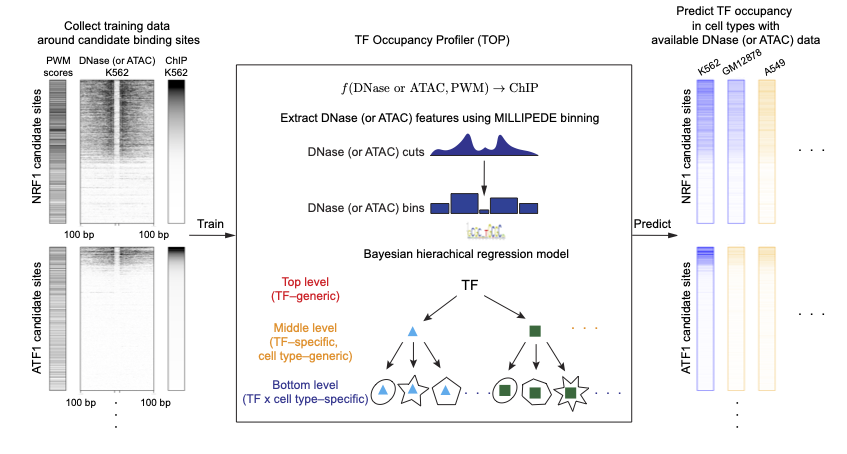

Transcription factor Occupancy Profiler (TOP) fits a Bayesian hierarchical model using transcription factor (TF) motifs, DNase- or ATAC-seq data, as well as ChIP-seq data (only required in training) from multiple TFs across multiple cell types.
It can be used to predict the quantitative occupancy or binding probability for many TFs using data from a single DNase- or ATAC-seq experiment. Thus, it allows efficient profiling of quantitative TF occupancy landscapes across multiple cell types or conditions using DNase- or ATAC-seq experiments.

You can install the development version of TOP from GitHub with:
# install.packages("devtools")
devtools::install_github("HarteminkLab/TOP")After installing, check that it loads properly:
Please follow the tutorials to learn how to use the package.
All source code and software in this repository are made available under the terms of the MIT license.